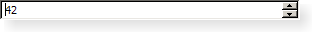

QSpinBox Class
The QSpinBox class provides a spin box widget. More...
| Header: | #include <QSpinBox> |
| CMake: | find_package(Qt6 REQUIRED COMPONENTS Widgets) target_link_libraries(mytarget PRIVATE Qt6::Widgets) |
| qmake: | QT += widgets |
| Inherits: | QAbstractSpinBox |
Properties
|
|
Public Functions
| QSpinBox(QWidget *parent = nullptr) | |
| virtual | ~QSpinBox() |
| QString | cleanText() const |
| int | displayIntegerBase() const |
| int | maximum() const |
| int | minimum() const |
| QString | prefix() const |
| void | setDisplayIntegerBase(int base) |
| void | setMaximum(int max) |
| void | setMinimum(int min) |
| void | setPrefix(const QString &prefix) |
| void | setRange(int minimum, int maximum) |
| void | setSingleStep(int val) |
| void | setStepType(QAbstractSpinBox::StepType stepType) |
| void | setSuffix(const QString &suffix) |
| int | singleStep() const |
| QAbstractSpinBox::StepType | stepType() const |
| QString | suffix() const |
| int | value() const |
Public Slots
| void | setValue(int val) |
Signals
| void | textChanged(const QString &text) |
| void | valueChanged(int i) |
Protected Functions
| virtual QString | textFromValue(int value) const |
| virtual int | valueFromText(const QString &text) const |
Reimplemented Protected Functions
| virtual bool | event(QEvent *event) override |
| virtual void | fixup(QString &input) const override |
| virtual QValidator::State | validate(QString &text, int &pos) const override |
Detailed Description

QSpinBox is designed to handle integers and discrete sets of values (e.g., month names); use QDoubleSpinBox for floating point values.
QSpinBox allows the user to choose a value by clicking the up/down buttons or pressing up/down on the keyboard to increase/decrease the value currently displayed. The user can also type the value in manually. The spin box supports integer values but can be extended to use different strings with validate(), textFromValue() and valueFromText().
Every time the value changes QSpinBox emits valueChanged() and textChanged() signals, the former providing a int and the latter a QString. The textChanged() signal provides the value with both prefix() and suffix(). The current value can be fetched with value() and set with setValue().
Clicking the up/down buttons or using the keyboard accelerator's up and down arrows will increase or decrease the current value in steps of size singleStep(). If you want to change this behaviour you can reimplement the virtual function stepBy(). The minimum and maximum value and the step size can be set using one of the constructors, and can be changed later with setMinimum(), setMaximum() and setSingleStep().
Most spin boxes are directional, but QSpinBox can also operate as a circular spin box, i.e. if the range is 0-99 and the current value is 99, clicking "up" will give 0 if wrapping() is set to true. Use setWrapping() if you want circular behavior.
The displayed value can be prepended and appended with arbitrary strings indicating, for example, currency or the unit of measurement. See setPrefix() and setSuffix(). The text in the spin box is retrieved with text() (which includes any prefix() and suffix()), or with cleanText() (which has no prefix(), no suffix() and no leading or trailing whitespace).
It is often desirable to give the user a special (often default) choice in addition to the range of numeric values. See setSpecialValueText() for how to do this with QSpinBox.
Subclassing QSpinBox
If using prefix(), suffix(), and specialValueText() don't provide enough control, you subclass QSpinBox and reimplement valueFromText() and textFromValue(). For example, here's the code for a custom spin box that allows the user to enter icon sizes (e.g., "32 x 32"):
int IconSizeSpinBox::valueFromText(const QString &text) const { static const QRegularExpression regExp(tr("(\\d+)(\\s*[xx]\\s*\\d+)?")); Q_ASSERT(regExp.isValid()); const QRegularExpressionMatch match = regExp.match(text); if (match.isValid()) return match.captured(1).toInt(); return 0; } QString IconSizeSpinBox::textFromValue(int value) const { return tr("%1 x %1").arg(value); }
See also QDoubleSpinBox, QDateTimeEdit, QSlider, and Spin Boxes Example.
Property Documentation
[read-only] cleanText : const QString
This property holds the text of the spin box excluding any prefix, suffix, or leading or trailing whitespace.
Access functions:
| QString | cleanText() const |
See also text, QSpinBox::prefix, and QSpinBox::suffix.
displayIntegerBase : int
This property holds the base used to display the value of the spin box
The default displayIntegerBase value is 10.
Access functions:
| int | displayIntegerBase() const |
| void | setDisplayIntegerBase(int base) |
See also textFromValue() and valueFromText().
maximum : int
This property holds the maximum value of the spin box
When setting this property the minimum is adjusted if necessary, to ensure that the range remains valid.
The default maximum value is 99.
Access functions:
| int | maximum() const |
| void | setMaximum(int max) |
See also setRange() and specialValueText.
minimum : int
This property holds the minimum value of the spin box
When setting this property the maximum is adjusted if necessary to ensure that the range remains valid.
The default minimum value is 0.
Access functions:
| int | minimum() const |
| void | setMinimum(int min) |
See also setRange() and specialValueText.
prefix : QString
This property holds the spin box's prefix
The prefix is prepended to the start of the displayed value. Typical use is to display a unit of measurement or a currency symbol. For example:
sb->setPrefix("$");
To turn off the prefix display, set this property to an empty string. The default is no prefix. The prefix is not displayed when value() == minimum() and specialValueText() is set.
If no prefix is set, prefix() returns an empty string.
Access functions:
| QString | prefix() const |
| void | setPrefix(const QString &prefix) |
See also suffix(), setSuffix(), specialValueText(), and setSpecialValueText().
singleStep : int
This property holds the step value
When the user uses the arrows to change the spin box's value the value will be incremented/decremented by the amount of the singleStep. The default value is 1. Setting a singleStep value of less than 0 does nothing.
Access functions:
| int | singleStep() const |
| void | setSingleStep(int val) |
stepType : StepType
This property holds the step type.
The step type can be single step or adaptive decimal step.
Access functions:
| QAbstractSpinBox::StepType | stepType() const |
| void | setStepType(QAbstractSpinBox::StepType stepType) |
suffix : QString
This property holds the suffix of the spin box
The suffix is appended to the end of the displayed value. Typical use is to display a unit of measurement or a currency symbol. For example:
sb->setSuffix(" km");
To turn off the suffix display, set this property to an empty string. The default is no suffix. The suffix is not displayed for the minimum() if specialValueText() is set.
If no suffix is set, suffix() returns an empty string.
Access functions:
| QString | suffix() const |
| void | setSuffix(const QString &suffix) |
See also prefix(), setPrefix(), specialValueText(), and setSpecialValueText().
value : int
This property holds the value of the spin box
setValue() will emit valueChanged() if the new value is different from the old one. The value property has a second notifier signal which includes the spin box's prefix and suffix.
Access functions:
| int | value() const |
| void | setValue(int val) |
Notifier signal:
| void | valueChanged(int i) |
Member Function Documentation
[explicit] QSpinBox::QSpinBox(QWidget *parent = nullptr)
Constructs a spin box with 0 as minimum value and 99 as maximum value, a step value of 1. The value is initially set to 0. It is parented to parent.
See also setMinimum(), setMaximum(), and setSingleStep().
[virtual noexcept] QSpinBox::~QSpinBox()
Destructor.
[override virtual protected] bool QSpinBox::event(QEvent *event)
Reimplements: QAbstractSpinBox::event(QEvent *event).
[override virtual protected] void QSpinBox::fixup(QString &input) const
Reimplements: QAbstractSpinBox::fixup(QString &input) const.
void QSpinBox::setRange(int minimum, int maximum)
Convenience function to set the minimum, and maximum values with a single function call.
setRange(minimum, maximum);
is equivalent to:
setMinimum(minimum); setMaximum(maximum);
void QSpinBox::setStepType(QAbstractSpinBox::StepType stepType)
Sets the step type for the spin box to stepType, which is single step or adaptive decimal step.
Adaptive decimal step means that the step size will continuously be adjusted to one power of ten below the current value. So when the value is 1100, the step is set to 100, so stepping up once increases it to 1200. For 1200 stepping up takes it to 1300. For negative values, stepping down from -1100 goes to -1200.
Step direction is taken into account to handle edges cases, so that stepping down from 100 takes the value to 99 instead of 90. Thus a step up followed by a step down – or vice versa – always lands on the starting value; 99 -> 100 -> 99.
Setting this will cause the spin box to disregard the value of singleStep, although it is preserved so that singleStep comes into effect if adaptive decimal step is later turned off.
Note: Setter function for property stepType.
See also stepType().
[signal] void QSpinBox::textChanged(const QString &text)
This signal is emitted whenever the spin box's text is changed. The new text is passed in text with prefix() and suffix().
[virtual protected] QString QSpinBox::textFromValue(int value) const
This virtual function is used by the spin box whenever it needs to display the given value. The default implementation returns a string containing value printed in the standard way using QWidget::locale().toString(), but with the thousand separator removed unless setGroupSeparatorShown() is set. Reimplementations may return anything. (See the example in the detailed description.)
Note: QSpinBox does not call this function for specialValueText() and that neither prefix() nor suffix() should be included in the return value.
If you reimplement this, you may also need to reimplement valueFromText() and validate()
See also valueFromText(), validate(), and QLocale::groupSeparator().
[override virtual protected] QValidator::State QSpinBox::validate(QString &text, int &pos) const
Reimplements: QAbstractSpinBox::validate(QString &input, int &pos) const.
[signal] void QSpinBox::valueChanged(int i)
This signal is emitted whenever the spin box's value is changed. The new value's integer value is passed in i.
Note: Notifier signal for property value.
[virtual protected] int QSpinBox::valueFromText(const QString &text) const
This virtual function is used by the spin box whenever it needs to interpret text entered by the user as a value.
Subclasses that need to display spin box values in a non-numeric way need to reimplement this function.
Note: QSpinBox handles specialValueText() separately; this function is only concerned with the other values.
See also textFromValue() and validate().